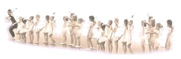
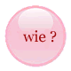
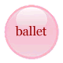
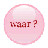
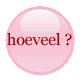
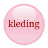
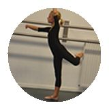

De Balletboetiek
balletschool voor Flamenco & Klassie
k
Balletschool in Elst






Links
Waar koop ik balletkleding ?
Wat is de Kultuurklup ?
Kleurplaat van de Balletboetiek downloaden (PDF
)
Theater de Kik in Elst
N
ederlandse
B
ondVoor
D
ans
K
ustenaars
De Balletboetiek gebruikt o.a. cd's van: MuziekService
Muziekschool all-music
Opening Kultuurklup in de krant
Balletvoorstelling Zomervlucht in de krant!
De Balletboetiek sponsort Duchenne-hero Martien Tax
Masterclass recensie in de Weekkrant
Balletvoorstelling
'
Er was eens' artikel in de Weekkrant.nl
Balletfilms in de bioscoop seizoen 2013-2014
Opendag & Auditie Dansacademie Arnhem
Zangeres Katlin die voor ons zong tijdens de Opendag 2012
Algemene voorwaarden & Huisregels